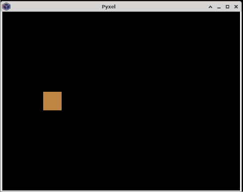
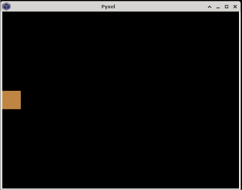

Pyxel
Pyxel is a retro game engine made for Python. There are some intentional limitations to the game engine, such as only being allowed to display 16 colors on the screen at any given time and only 4 sounds can be playing simultaneously.
These limitations are meant to help games made in it stay true to the retro-gaming era the library is aiming at recreating, and it can also be a good exercise in keeping your projects small and focused.
Examples
Drawing an Object on the Screen
Let's draw a basic square on the screen and make it constantly move to the right:
import pyxel
class App:
def __init__(self):
# Initialize the screen
self.screen_width = 640
self.screen_height = 480
pyxel.init(self.screen_width, self.screen_height)
# Initialize some variables for our box
self.width = 50
self.height = 50
self.x = 0
self.y = self.screen_height//2 - self.height//2
self.x_speed = 10
# Tell pyxel to run with our update and draw functions
pyxel.run(self.update, self.draw)
def update(self):
self.x = (self.x + self.x_speed) % pyxel.width
def draw(self):
# pyxel.cls(0) clears the previous frame
pyxel.cls(0)
# This draws a rectangle on the screen
pyxel.rect(self.x, self.y, self.width, self.height, 9)
App()

Getting User Input
Let's add some basic controls to our game. Let's make that square move with the keyboard:
import pyxel
class App:
def __init__(self):
# Initialize the screen
self.screen_width = 640
self.screen_height = 480
pyxel.init(self.screen_width, self.screen_height)
# Initialize some variables for our box
self.width = 50
self.height = 50
self.x = 0
self.y = self.screen_height//2 - self.height//2
self.x_speed = 10
self.y_speed = 10
# Tell pyxel to run with our update and draw functions
pyxel.run(self.update, self.draw)
def get_player_movement(self):
x_vel = 0
y_vel = 0
if pyxel.btn(pyxel.KEY_LEFT):
x_vel -= self.x_speed
if pyxel.btn(pyxel.KEY_RIGHT):
x_vel += self.x_speed
if pyxel.btn(pyxel.KEY_UP):
y_vel -= self.y_speed
if pyxel.btn(pyxel.KEY_DOWN):
y_vel += self.y_speed
return x_vel, y_vel
def update(self):
x_vel, y_vel = self.get_player_movement()
self.x = (self.x + x_vel) % pyxel.width
self.y = (self.y + y_vel) % pyxel.height
def draw(self):
pyxel.cls(0)
pyxel.rect(self.x, self.y, self.width, self.height, 9)
App()
We can now move our box freely around with the arrow keys:

Reference
- Pyxel README at github.com